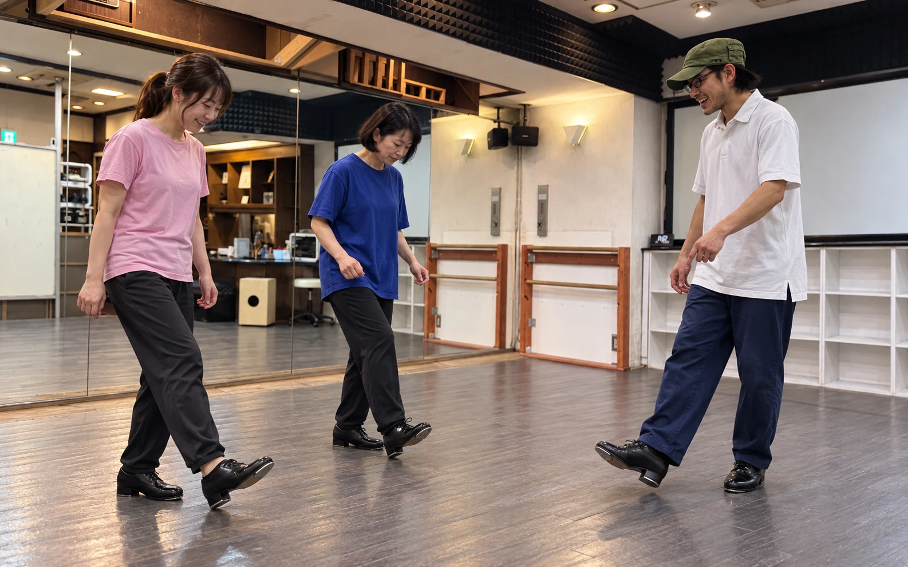
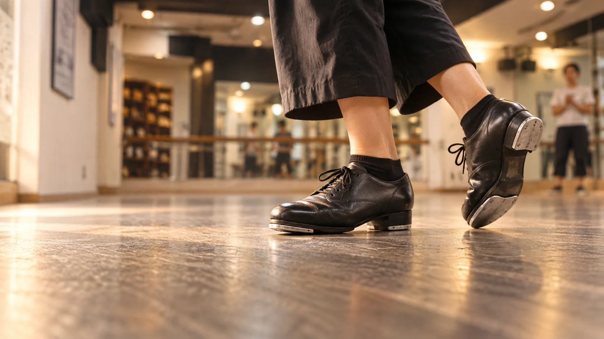
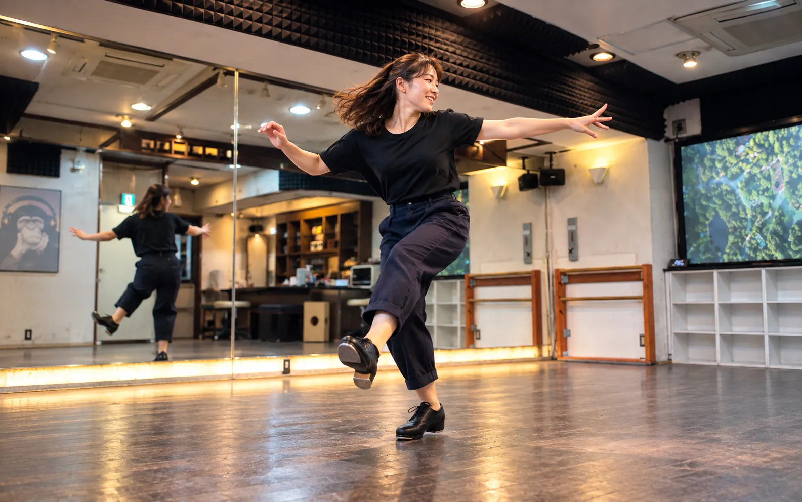
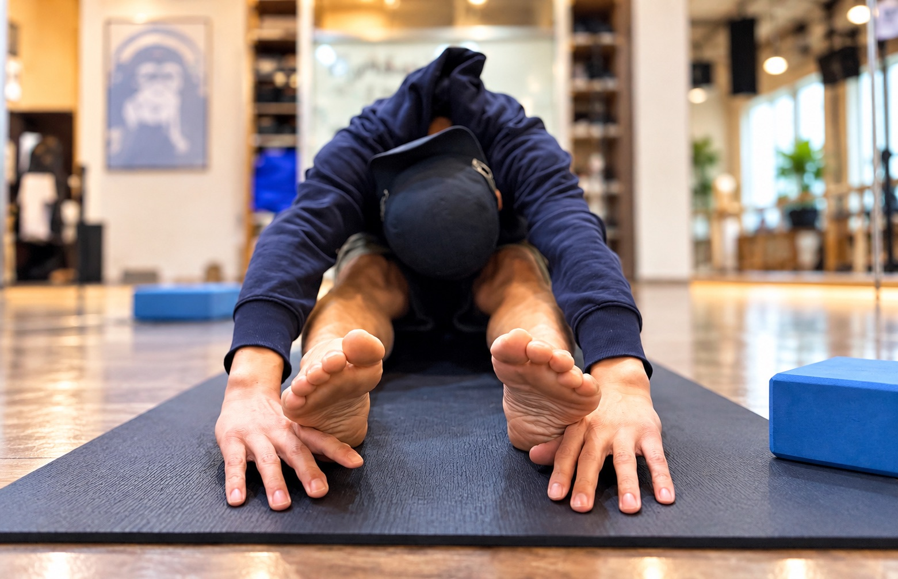
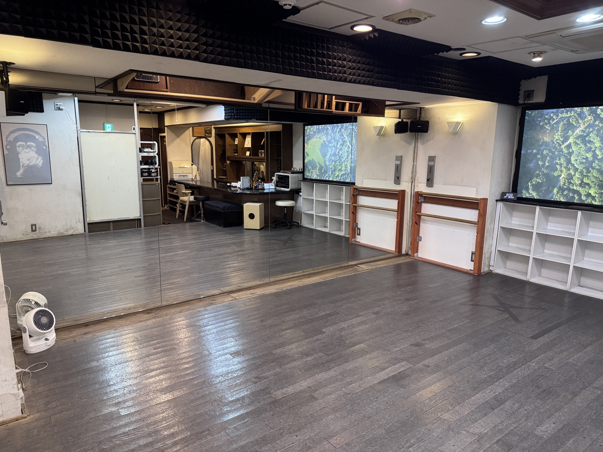
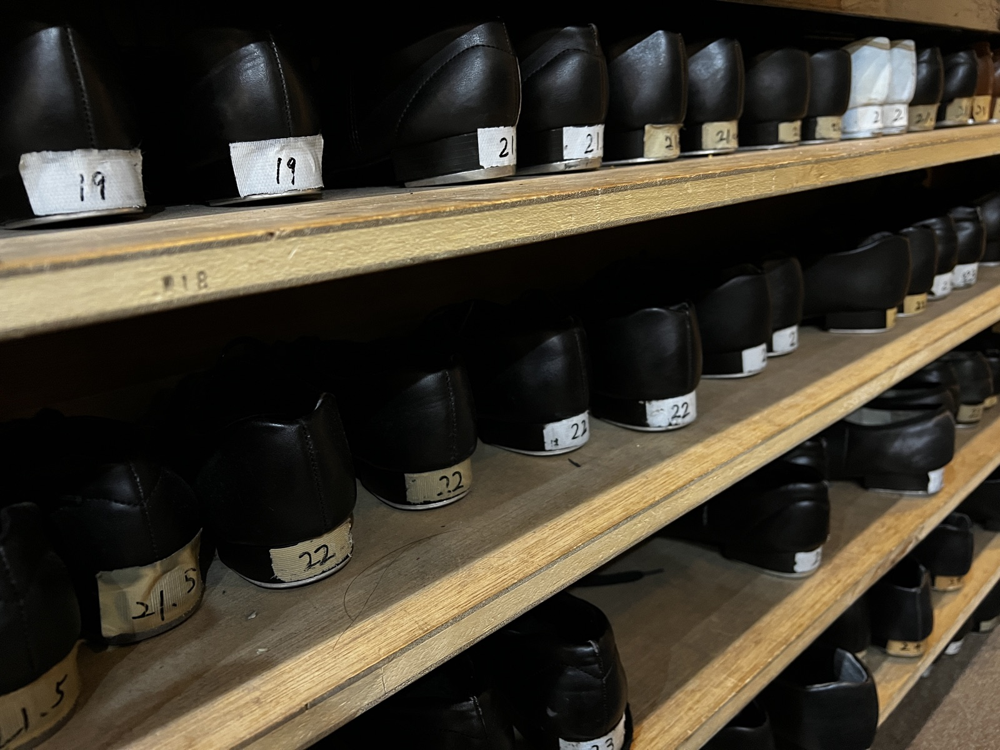
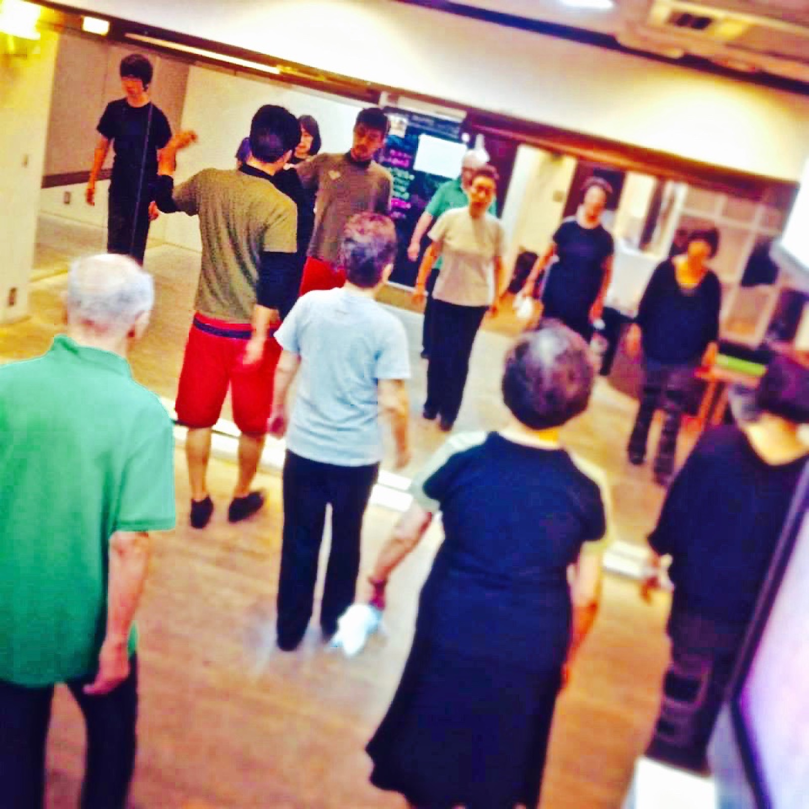

FIRST TAP / IKEBUKURO
タップダンス、
ここから始めよう。
未経験でも、運動目的でも、新しい趣味でも。
今のあなたに近い入口から始められます。
初回体験 ¥1,000
池袋駅 徒歩3分
手ぶらOK

START FINDER
今いちばん近いのは、どれですか？
年齢ではなく、やってみたいことから選べます。
YOUR START
あなたなら、ここから。


NO NEED TO BE READY
できるか不安でも、大丈夫。
- 運動経験がない
- STEPなら基本の立ち方や足の使い方から始められます。
- 身体が硬い
- STRETCHなど身体づくりから始める選択肢もあります。
- 一人で行くのが不安
- 一人での体験参加もできます。
- 道具を持っていない
- タップシューズとウェアは無料レンタルです。
- 年齢が気になる
- Rhythm Speakerには10代から80代まで、それぞれの目的で通う方がいます。
REAL RHYTHM SPEAKER
実際の場所で、実際に始める。
初めて訪れる前に、スタジオの雰囲気を少しだけご紹介します。



FIRST LESSON
まずは、
足踏みから。
タップシューズを履いて、床を踏んでみる。
自分の足から音が出たら、もう最初の一歩です。
ON THE DAY
体験当日は、3ステップ。
- 01
来店
15分前を目安に来店。シューズとウェアを選びます。
- 02
体験レッスン
基本姿勢と、最初の音の出し方から始めます。
- 03
必要なら相談
続けたい方には、クラスや通い方をご案内します。
BEFORE YOU COME